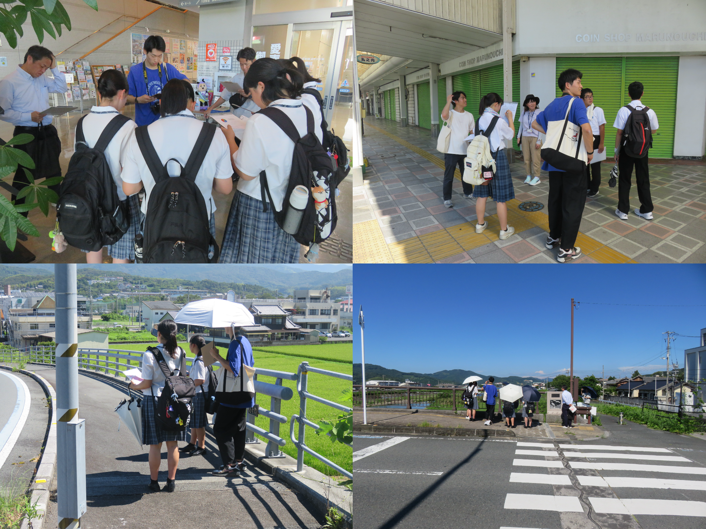

目次
活動概要
慣れ親しんだ地域の地形や歴史、地域の人々の声から学び、南海トラフ地震や豪雨災害が起きた場合に課題となることは何か、自分たちに今何ができるかについて、みんなで議論します。 地域の方や家族への過去の災害に関するインタビュー、同級生へのアンケート、レイヤー分析や歴史史料調査など、地元に住む中高校生だからこその視点を生かして事前復興プランを考えます。 2024年度は宇和島東高校、宇和島南高校、大洲高校、大洲農業高校、天竜高校、南宇和高校、八幡浜高校の皆さんを中心に参加してくれます。
演習資料
活動の進め方（詳細とポイント）
防災、事前復興とは何をすることでしょうか。何から考えればいいのでしょうか。
地域の方や家族への過去の災害に関するインタビュー、同級生へのアンケート、レイヤー分析や歴史史料調査など、復興と防災地理の学習の進め方を紹介します。
日程
| 日 | 形式 | 内容 | 参加校 |
|---|---|---|---|
| 7月（高校別） | まちあるきWS | 地元のまちを歩きながら災害リスク や地域の課題を考える | 宇和島東高校，大洲高校，大洲農業高校，天竜高校，南宇和高校 |
| 7/27(土)-30(火) | 東北復興視察 | 東日本大震災の被災地の復興を見学 | 宇和島東高校，宇和島南中等，大洲高校，大洲農業高校，天竜高校，南宇和高校，八幡浜高校 |
| 9/26(木) | 初回授業 | ガイダンスと敷地の議論 調査手法の紹介 高校での活動の報告 | 大洲農業高校，八幡浜高校 |
| 10/1(火) | 初回授業 | ガイダンスと敷地の議論 調査手法の紹介 高校での活動の報告 | 宇和島東高校，大洲高校，天竜高校，南宇和高校 |
| 10/29(火) | 第二回授業 | 提案・活動のエスキス | 大洲高校，大洲農業高校，八幡浜高校 |
| 11/7(木) | 第二回授業 | 提案・活動のエスキス | 宇和島東高校，天竜高校，南宇和高校 |
| 11/19(火) | 第三回授業 | 提案・活動のエスキス | 宇和島東高校，大阪教育大学附属高校天王寺校舎，大洲農業高校，南宇和高校，八幡浜高校 |
| 11/25(月) | 第三回授業 | 提案・活動のエスキス | 大洲高校，天竜高校 |
| 12/1(日) | 復興デザイン会議 | 最終発表 | あなん防災地理部，宇和島東高校，大阪教育大学附属高校天王寺校舎，大洲高校，大洲農業高校，天竜高校，南宇和高校，八幡浜高校 |
| 12/8(日) | 宇和島市PTA研究大会 | 現地発表 | 宇和島東高校，宇和島南高校，南宇和高校，八幡浜高校 |
| 2/22(日) | 愛南町事前復興フォーラム | 現地発表 | 南宇和高校 |
| 3/8(土) | 大洲市流域治水報告会 | 現地発表 | 大洲高校，大洲農業高校 |
| 3/9(日) | うわじま防災シンポジウム | 現地発表 | 宇和島東高校，宇和島南中等 |
活動報告
まちあるきWS
愛媛県の宇和島東高校，南宇和高校，大洲高校，大洲農業高校と静岡県の天竜高校を対象に，地域のまちあるき活動を行いました． それぞれの地域を防災・避難・まちづくりなどの観点から改めて見つめ直し，今後の東北視察や提案・地域活動の方向性を考えるきっかけとなりました． まちあるき活動の詳細はこちら

東北復興視察
愛媛県の八幡浜高校，宇和島東高校，宇和島南中等，南宇和高校，大洲高校，大洲農業高校と，静岡県の天竜高校とともに東日本大震災の被災地を巡り，避難と復興まちづくりについて現場の模索を見学・体験しました． 福島県浪江町では原発事故に伴う長期避難の実態，そこからの帰還者や移住者による新しいまちづくりの動向を展示や住民の方との対話で学びました． 発災直後の避難対応が分かれた事例を浪江町の請戸小学校と石巻市の大川小学校とでそれぞれ学び，避難の重要性と判断の難しさを痛感しました． また，仙台市荒浜，石巻市雄勝町，石巻市北上町，南三陸町，陸前高田市，釜石市花露辺地区・赤浜地区では地域ごとに異なる復興の形を見ることができました． 東北で学んだことを事前復興への教訓としてそれぞれの地域へ持ち帰り，今後の提案・活動に繋げていきます． 視察の詳細はこちら

初回授業
9月26日参加校: 大洲農業高校，八幡浜高校
10月1日参加校: 宇和島東高校，大洲高校，天竜高校，南宇和高校

第二回授業
10月29日参加校: 大洲高校，大洲農業高校，八幡浜高校
11月7日参加校: 宇和島東高校，天竜高校，南宇和高校

第三回授業
11月19日参加校: 宇和島東高校，大阪教育大学附属高校天王寺校舎，大洲農業高校，南宇和高校，八幡浜高校
11月25日参加校: 大洲高校，天竜高校

復興デザイン会議 最終発表
12月1日に東京大学本郷キャンパスにて開催された復興デザイン会議において「次世代が描く地域復興：中高生による復興・事前復興の取り組み」の題で活動発表を行いました。 大阪教育大学附属高校天王寺校舎、大洲高校、大洲農業高校、宇和島東高校（2チーム）、天竜高校、南宇和高校、八幡浜高校から事前復興プランの提案を行い、専門家の方からコメントをいただきました。 詳しくはこちら
現地発表(宇和島市PTA研究大会)
2024年12月8日に宇和島市津島公民館で開催された「宇和島市PTA研究大会」にて宇和島東高校，宇和島南高校および南宇和高校の防災地理部が活動成果を発表しました．

現地発表(愛南町事前復興フォーラム)
2025年2月22日に愛媛県愛南町にて「愛南町防災・事前復興フォーラム」が開催され，南宇和高校が防災地理部の活動成果を発表しました． 当日の様子は以下URLより確認いただけます．
現地発表(大洲市 水害リスクを踏まえた防災まちづくり・報告会)
2025年3月8日に愛媛県大洲市にて「大洲市 水害リスクを踏まえた防災まちづくり・報告会」が開催され，大洲高校・大洲農業高校が防災地理部の活動成果を発表しました． 当日の様子は以下URLより確認いただけます．
現地発表(宇和島市 うわじま防災シンポジウム)
2025年3月9日に愛媛県宇和島市にて「うわじま防災シンポジウム」が開催され，宇和島東高校・宇和島南中等が活動成果を発表しました． 当日の様子は以下のURLより確認いただけます．